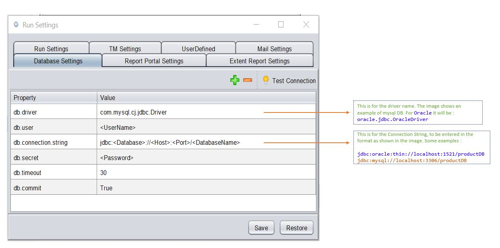
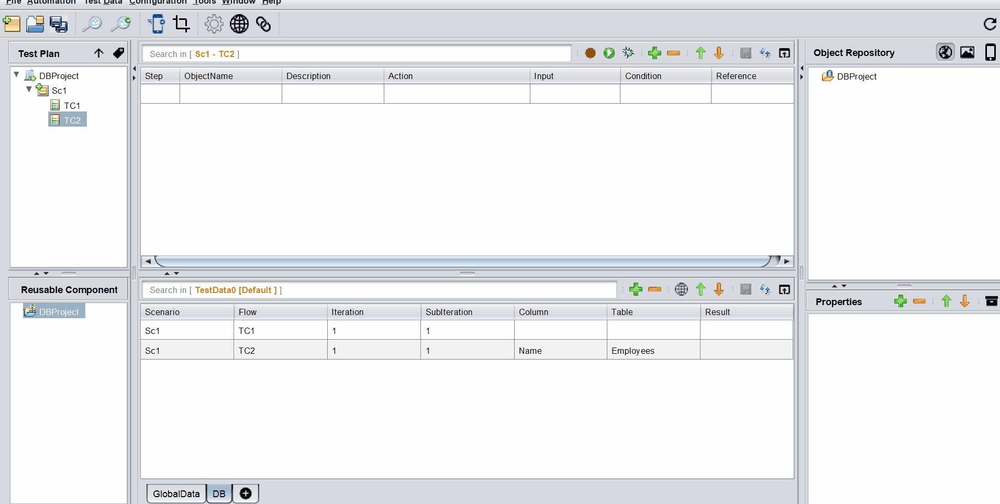

Database Testing
Database Testing is an important feature of the tool. It allows us to connect to any database and store and assert the results against datasheets.
This gives us an advantage of executing Web, API and Database actions all in one go in a single Test Flow
Set up Database Connection
- Download and store the jdbc driver jar in lib/clib location
-
If you are using mysql database you need to download
mysql-connector-j-X.jarfrom here. -
If you are using oracle database you need to download
ojdbcX.jarfrom here.X is the version of your choice -
In order to connect to specific database from tool we need to provide values in Database Settings under Run Settings of the tool.

In Java if you were to manually connect, you would invariably use the following :
Class.forName("com.mysql.cj.jdbc.Driver");
Connection con = DriverManager.getConnection("jdbc:mysql://localhost:3306/productDB", "My_DB_UserName", "My_DB_Password");
## Query Editor
After the above setting is done, you can proceed with your first steps as shown below.

Data Parameterization can be done using the built-in editor. If you mouse-hover on the Input column, corresponding to the DB steps, an option to open up the Editor comes up.
Inside this editor, we can write the Query and then parameterize it based on our needs.
If we press [ctrl] + [SPACE], the list of all available DataSheets : ColumnNames along with all user-defined variables show up. We can then select the appropriate item from where we want to parameterize.
We need to press [esc] to close the editor
 The above image is a gif. So if its not moving, please reload the page
## Actions
There are 11 built-in Actions.
Please click the action-cloud below to check the details